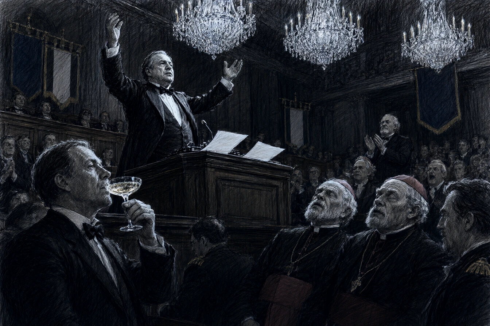

Dans les salons dorés de la préfecture du Bas-Rhin, sous les lustres de cristal de Baccarat qui tempêtaient d'éclairs sous les flashs des photographes, trois cents notables du département trinquaient au vin d'honneur du congrès régional des maires.
Monsieur Armand Dupont, député de la circonscription de Bischwiller et questeur de l'Assemblée, rajustait son nœud papillon de soie noire devant la glace d'un trumeau. À cinquante-six ans, Armand possédait une voix d'orgue de cathédrale, un ventre respectable moulé dans une redingote sur mesure et l'art souverain de ne jamais froisser un électeur rural.
Son attaché parlementaire, un jeune homme aux joues pâles nommé Vincent, lui tendit un dossier de maroquin rouge.
« Votre discours sur l'attractivité des zones artisanales et le développement des rond-points fleuris, monsieur le député. J'ai glissé les citations d'usage sur la fierté alsacienne et la rigueur budgétaire. « Tu as bien abrégé la partie sur les subventions d'assainissement, Vincent ? Le préfet a faim, les truites au riesling refroidissent au buffet. » »
Armand gravit les trois marches de l'estrade d'un pas majestueux sous les applaudissements nourris des conseillers généraux.
* * *
À la tribune, le député posa ses feuillets sur le pupitre de chêne et saisit ses lunettes d'écaille.
Dans la pile de papiers préparée par Vincent, une feuille d'épreuve dactylographiée s'était glissée par inadvertance : le brouillon d'un tract syndical incendiaire rédigé la veille par les ouvriers grévistes des fonderies de Niederbronn, que le jeune attaché avait oublié dans la chemise ministérielle.
Armand entama sa péroraison d'une voix profonde qui roula sous les corniches :
« Mes chers concitoyens, l'heure n'est plus aux faux-fuyants des commissions d'arrondissement. Nous sommes gouvernés par une caste d'intermédiaires parasites qui engraissent leurs clientèles sur le dos des travailleurs du fer et de la terre ! »
Un silence de plomb tomba d'un coup sur l'assemblée.
Au premier rang, monsieur le préfet cessa de porter sa coupe à ses lèvres, la bouche entrouverte. Monsieur le président de la chambre de commerce devint cramoisi.
Armand, grisé par la puissance de ses propres harmoniques et lisant d'un œil mécanique sans enregistrer le sens des phrases, tourna la page avec emphase :
« Les notables s'empiffrent de terrines aux frais de la caisse d'allocations pendant que les ateliers ferment un à un le long de la Moder ! Il est temps de balayer ces faux dévots qui transforment la République en syndicat de faillite bourgeoise ! »
L'orateur frappa du poing sur le pupitre. Le micro émit un larsen aigu qui fit sursauter deux évêques auxiliaires.
Armand leva les bras au ciel, salua d'un geste auguste, et descendit de la tribune d'un pas martial.
* * *
Pendant dix secondes, on n'entendit que le bourdonnement du ventilateur de plafond.
Puis, au fond de la salle, un vieux maire de village aux sabots vernis laissa échapper un éclat de voix :
« Ça, c'est parlé vrai ! »
Une première salve d'applaudissements crépita parmi les délégués des communes rurales. En un instant, toute la travée centrale se leva, trépignant sur les parquets cirés. Les jeunes maires applaudissaient à tout rompre, croyant à un coup d'éclat politique calculé pour renverser la vieille majorité départementale.
Monsieur le préfet s'avança vers Armand Dupont, qui s'épongeait le crâne avec son grand mouchoir blanc sans comprendre la clameur qui montait autour de lui.
Le représentant de l'État lui saisit chaleureusement les deux mains.
« C'était d'une audace inouïe, mon cher député. Une transgression magistrale. Le ministre de l'Intérieur m'appelait hier pour trouver une figure capable de canaliser la colère des territoires sans rompre avec Matignon. Votre discours est une pierre blanche. « Monsieur le préfet… balbutia Armand, la chemise trempée de sueur. C'était un devoir de sincérité républicaine… » « Vous partez pour Paris par le train de nuit de vingt-deux heures, » trancha le haut fonctionnaire en lui tapotant l'épaule. « La République a besoin d'hommes qui savent crier la vérité du peuple sans y croire une seconde. » »
Dans le buffet d'honneur, les bouchons de crémant sautaient dans un tintamarre joyeux, pendant que Vincent, réfugié derrière un rideau de velours, regardait son patron recevoir les hommages en tremblant de tous ses membres.